硬路由（4）—— Tailscale & 远程访问（IPv4）
Tailscale 与 VPN
如果想要远程访问路由器局域网内的设备，有两个办法：
- 路由器暴露在公网，并作端口映射 / 转发使得远程设备能够访问到局域网内的设备
- 组建虚拟局域网，使得想要访问的公网设备也在这个局域网中
LeSnow：虚拟局域网 其实也算暴露在公网
LeSnow：异地组网的必要性也体现在对 NAS 的访问上。最方便的协议是 SMB，SMB （139 / 445端口）一般是不能跑在公网上的，所以需要组网。一些专用 NAS 系统也是默认不运行在公网环境下的，它们可能连防火墙配置都没有（比如 TrueNAS）
方案 1 对路由器安全配置的要求较高，针对日常使用的情况，我们采用方案 2。
Tailscale 是一个基于 WireGuard 的 VPN 配置工具，通过去中心化的方式实现各个节点之间点对点的连接。配置简单友好，跨平台支持。
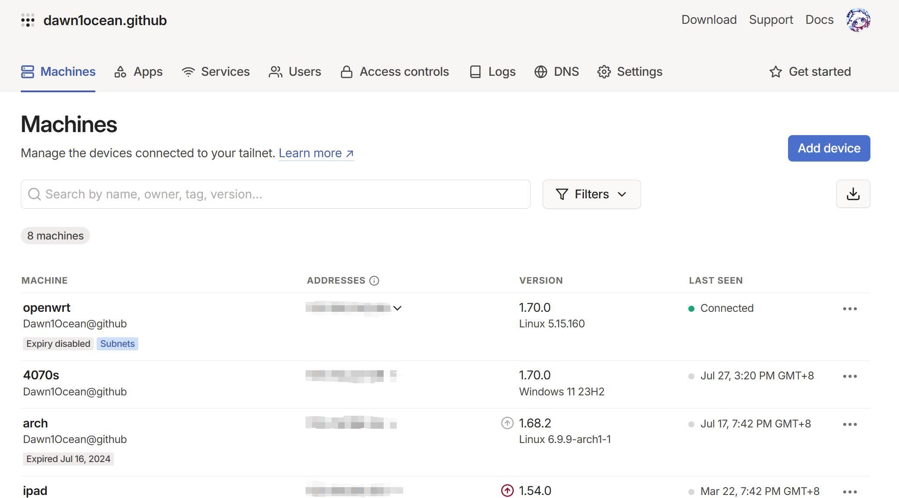
安装与配置 Tailscale
OpenWrt Tailscale 自动安装脚本，亲测有效。
-
踩坑记录：如果要将 OpenWrt 装在 AX3000T 上，建议使用此安装脚本。其原理为：每次启动后都通过脚本获取最新版本，将 Tailscale 装入 /tmp（内存）中。对于闪存空间不够的机器较友好。但同时也需注意：Tailscaled 占用内存较大，请酌情调整其他服务，以免造成路由器 OOM（Out of Memory）。
有一个更优雅的解决办法：将 Tailscale 装在 NAS 上。Tailscale 局域网网关不必和物理网关一致，因此可以选用内存和存储更有余裕的 NAS。关于在 NAS 上安装 Tailscale，官网提供了安装脚本，运行一行命令即可。记得设置开机启动以及按下文配置子网路由。
1 | curl -fsSL https://tailscale.com/install.sh | sh |
全新安装：
1 | wget -O- https://ghproxy.cc/https://raw.githubusercontent.com/CH3NGYZ/tailscale-openwrt/chinese_mainland/install.sh | sh |
本部分文章主要来自于这篇博客。
下载软件
进入服务 - 终端，将 Tailscale 软件包下载到指定目录。进入 Tailscale 的Github Releases地址，找到最新的软件包，使用 wget 下载到本地。
1 | wget https://github.com/adyanth/openwrt-tailscale-enabler/releases/download/v1.60.0-e428948-autoupdate/openwrt-tailscale-enabler-v1.60.0-e428948-autoupdate.tgz # 版本自行调整 |
解压软件
1 | tar x -zvC / -f openwrt-tailscale-enabler-v1.60.0-e428948-autoupdate.tgz |
安装依赖包
1 | opkg update |
设置开机启动，验证开机启动
1 | /etc/init.d/tailscale enable |
启动 Tailscale
1 | /etc/init.d/tailscale start |
获取登录链接并配置路由
1 | tailscale up |
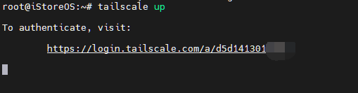
复制显示的地址，并在浏览器中打开，使用谷歌 / 微软 / GitHub 等帐号登录 Tailscale 的管理主页进行验证。
开启子网路由
子网路由功能使得启动 Tailscale 服务的路由器能够将流量中继至物理子网设备。换言之，只需要路由器配置 Tailscale，就可以使得路由器组建的局域网中的设备均可被远程访问。
输入以下命令，打开本地子路由。子网地址是 OpenWrt 的 Lan 网络。请自行填写子网地址。
1 | tailscale up --accept-routes --accept-dns=false --advertise-routes=192.168.31.0/24 |
在 Tailscale 的管理页面上，单击设备列表右侧的更多图标，禁用密钥过期，并打开子网路由。
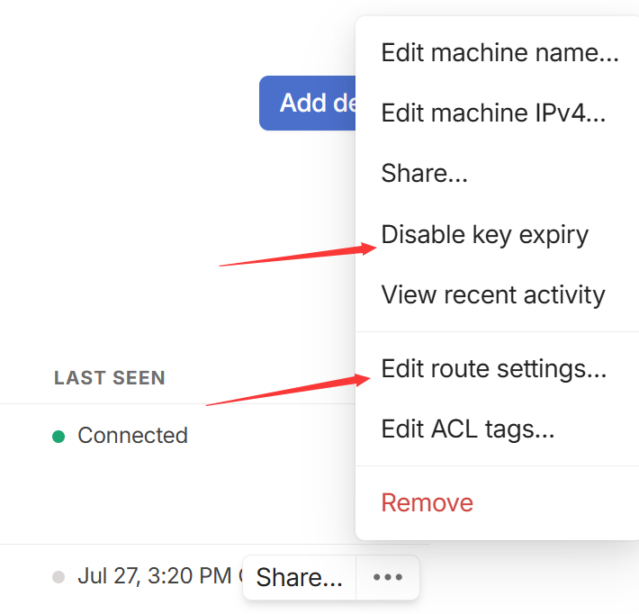
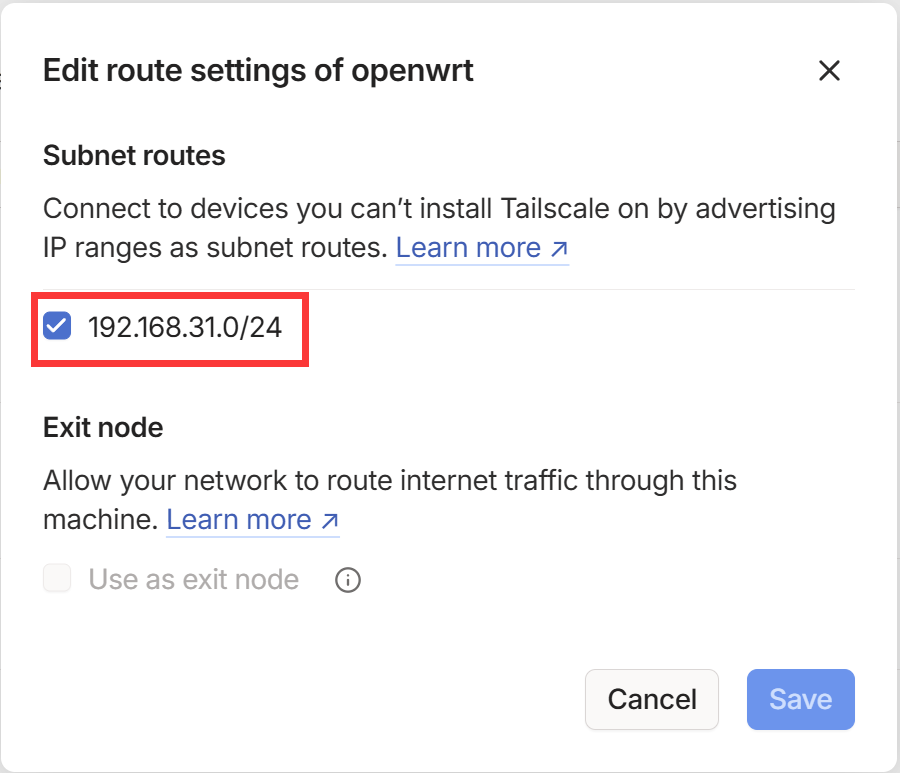
现在在 OpenWrt 上已经可以 ping 通其他 Tailscale 节点了，但其他节点还无法连接 OpenWrt 节点，还需要在 OpenWrt 上添加 Tailscale 接口。
添加接口
在网络 - 接口处新建一个接口，协议选静态地址，设备选tailscale0，地址为 Taliscale 管理页面上分配的地址，掩码255.0.0.0。防火墙区域选 lan 区域。
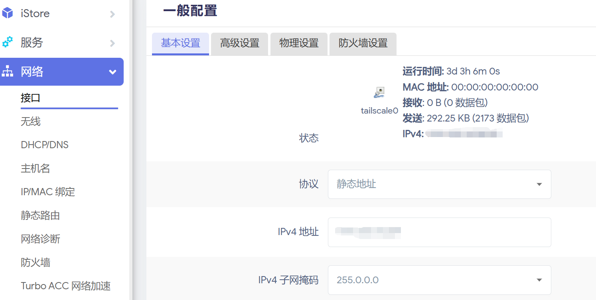
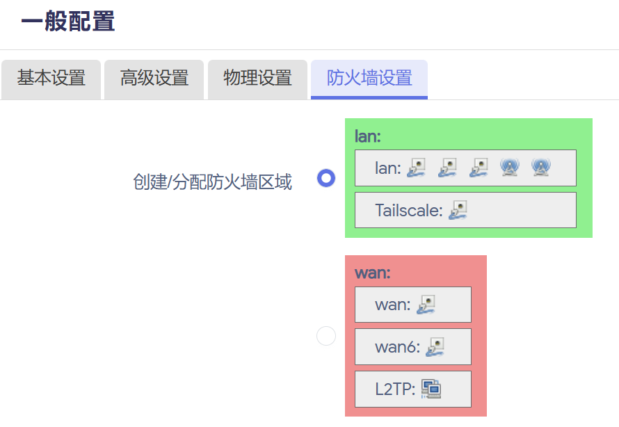
添加防火墙规则
在网络 - 防火墙 - 自定义规则处添加以下规则：
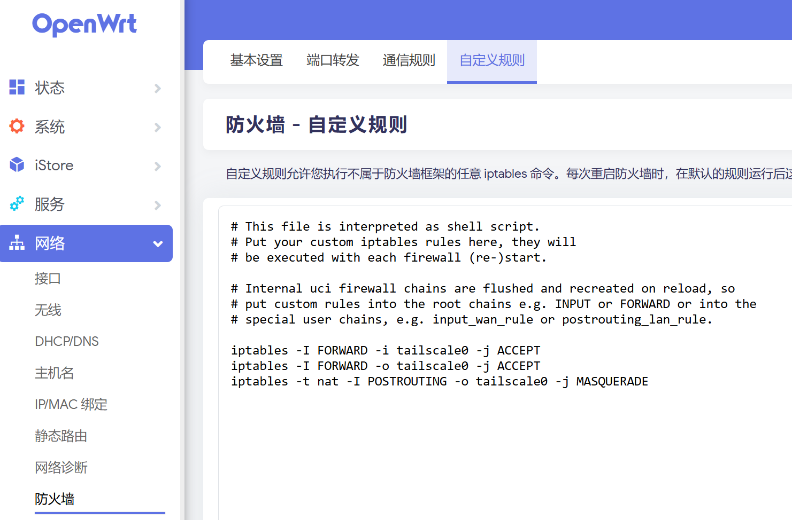
1 | iptables -I FORWARD -i tailscale0 -j ACCEPT |
现在各个Tailscale节点之间已经可以正常互访了。
局域网中其他设备的配置
踩坑记录：不要在局域网中其他设备启动 Tailscale 服务，否则可能会使得该设备无法访问路由器。
原因：访问路由器，在路由表中属于访问设备所在的局域网。启动 Tailscale 服务后，对于此局域网，设备会存在两个接口：一个是由 Tailscale 分配的地址，另一个是实际上的局域网地址。如果由 Tailscale 分配地址的跃点数比实际上局域网地址的跃点数小，设备就不会使用物理接口来发送到下一跳设备，而是使用 Tailscale 分配的地址，因此数据包无法送达。
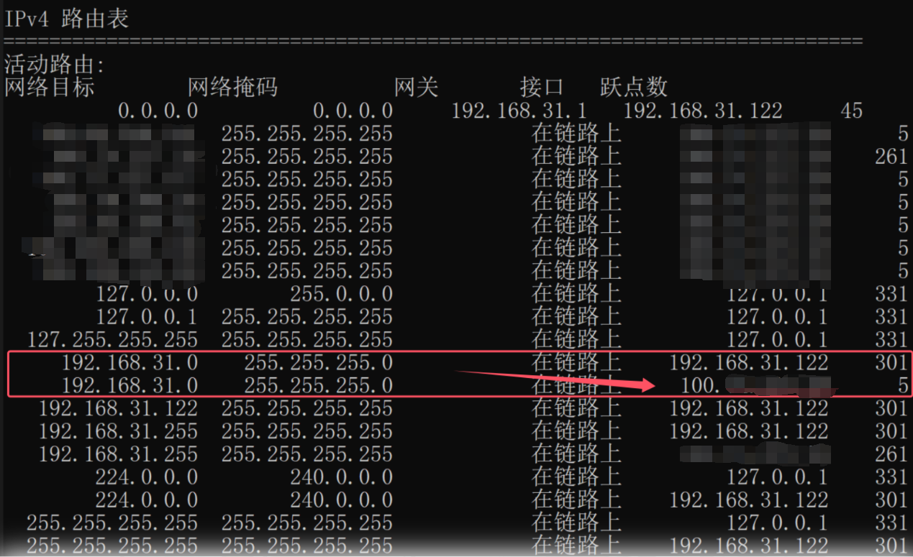
远程访问局域网
对于如 Windows 这样可安装 Tailscale 客户端的系统环境，在应用中确认已连接 Tailscale，就可实现远程访问局域网。
对于 Linux 等以软件包形式安装 Tailscale 客户端的系统环境，我们需要多运行一条命令来接受子网路由：
1 | sudo tailscale up --accept-routes |
进阶：自建 DERP 服务器
建议阅读这篇来自 Tailscale 官方的文章，当中详细介绍了 Tailscale 是如何解决 NAT 穿透问题的。
阅读这篇文章可知，当 STUN 不可用时，Tailscale 会采用 DERP（Detoured Encrypted Routing Protocol，由 Tailscale 创建的协议）来进行中继通信。
DERP 同时也是 Tailscale 连接升级的基础设施。在进行局域网打洞时，Tailscale 会先通过 DERP 服务器来实现两台设备之间的连接，再继续寻找延迟更低的链路（直连方式）等。
由于众所周知的原因，Tailscale 在中国大陆并没有官方的 DERP 服务器。为了解决国外 DERP 服务器高延迟以及被很多用户使用的安全性问题，我们可以采取自建 DERP 服务器的方式。
以下部分参考这篇文章。
准备工作
如果部署 DERP 服务的机器在国内（一般情况下），则需要有一个已备案的域名以及有效的 SSL 证书（无域名的方法请自行寻找）。
根据后续脚本，先创建存放证书的文件夹：
1 | mkdir /usr/local/cert |
以阿里云为例，我们可以申请多达 20 张的免费 SSL 证书。确保有对应子域名指向你的云服务器。申请证书的过程在此略过，建议为此子域名单独申请证书，最好不要使用泛域名证书。
不要使用 CDN 加速。
在阿里云控制台下载 Nginx 格式的证书，将.pem公钥后缀改为.crt，再上传至刚才创建的/usr/local/cert路径中。
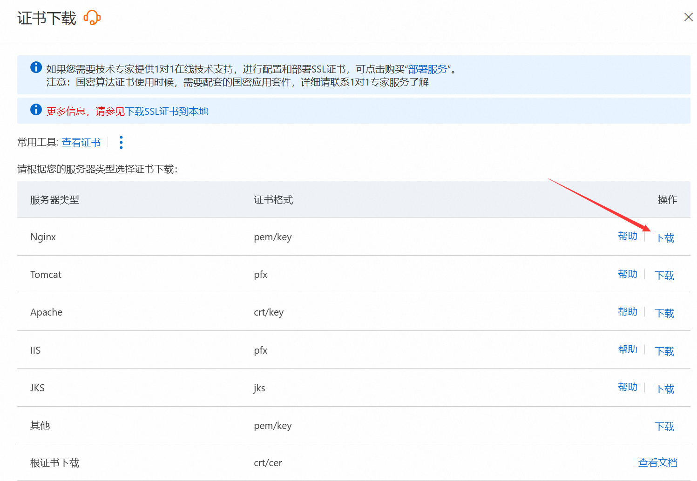
安装 Tailscale
通过 SSH 连接到云服务器后，运行如下命令：
1 | curl -fsSL https://tailscale.com/install.sh | sh |
安装 Golang
打开 https://go.dev/doc/install，查看 Go 的最新版本号。
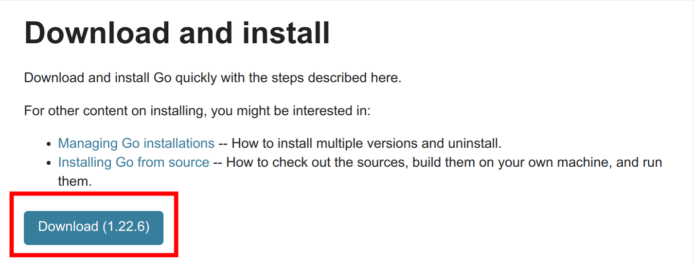
1 | wget https://go.dev/dl/go<最新版本号>.linux-amd64.tar.gz |
编辑/etc/profile文件：
1 | vim /etc/profile |
在文件末尾添加以下内容：
1 | export GOROOT=/usr/local/go |
输入如下命令：
1 | source /etc/profile |
再输入以下命令检查 Go 是否安装成功：
1 | go version |
安装 derper 服务
建立目录：
1 | mkdir -p /usr/local/gopath/bin |
输入以下命令来安装：
1 | go env -w GOPROXY=https://goproxy.cn,direct |
建立启动脚本：
1 | vim /usr/local/gopath/bin/runderper |
输入以下内容：
1 |
|
参数
-verify-clients用来防止别人（知道你的域名后）白嫖你的中继节点，只认服务器上 Tailscale 客户端登录的账号。
建立停止脚本：
1 | vim /usr/local/gopath/bin/stopderper.sh |
输入以下内容：
1 |
|
给脚本赋权：
1 | chmod +x /usr/local/gopath/bin/runderper |
建立服务：
1 | vim /etc/systemd/system/derper.service |
输入以下内容：
1 | Description=derper服务 |
在云服务器控制台防火墙处，放行你刚刚设置的 derper 服务端口（TCP）与 3478端口（UDP，这是 STUN 服务的端口）。
启动服务
先启动 Tailscale：
1 | tailscale up |
访问提示的网址进行授权即可。
接着启动 derper 服务：
1 | systemctl enable derper |
确认状态为 active(running) 后，访问网址 https://<你的域名>:56473/，出现以下页面就是部署成功。
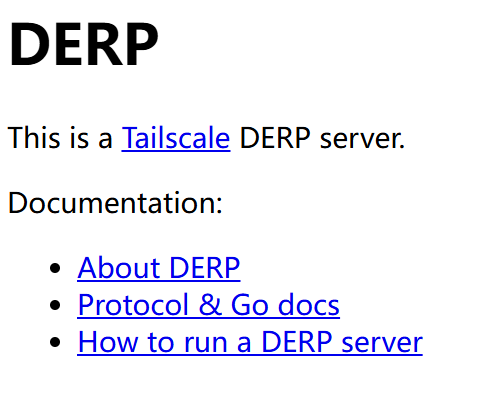
添加中继节点
在 Tailscale 网页控制台中的Access controls栏的文件中，ssh项的上方加入以下内容：
1 | "derpMap": { |
测试延迟
在加入了 Tailscale 的设备中输入：
1 | tailscale netcheck |
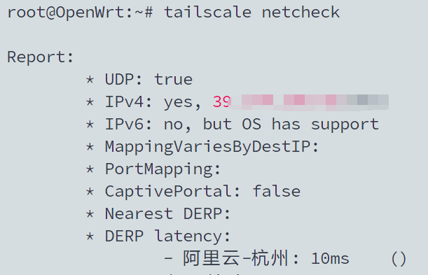
显示了中继节点名称，DERP 中继已成功建立。
Extra：阿里云与 Tailscale
具体说明可以查看这篇文章。
如果在阿里云服务器上根据上述步骤配置 DERP 服务器后，会发现服务器不能访问外网了。
简单来说，阿里云使用的内网 DNS 服务器 IP 地址为 100.100.2.136 与 100.100.2.138，而 Tailscale 在启动时会设置一条 Drop 100.64.0.0/10 IP 段的防火墙规则，而阿里云内网的一些服务就位于这些 IP 段。
查看 IPTables：
1 | iptables -L --line-numbers |
规则 ts-input 如下：
1 | Chain ts-input (1 references) |
删除这条 Drop 规则可以解决问题：
1 | iptables -D ts-input 3 # 输入对应的 num |
但请注意：这条规则并不是可有可无的。大部分较新的 Linux 发行版存在漏洞 CVE-2019-14899，该漏洞可使攻击者劫持 VPN 链接。使用 iptables 过滤掉一些地址可以作为缓解措施之一。
删除这条规则可能会将正在使用基于 WireGuard 的 VPN（例如 Tailscale）的 Linux 主机置于风险之中，请务必仔细权衡利弊。
如果要恢复，重启服务器或者 Tailscale 即可。
下一章节：校园网 & 远程访问（IPv6）